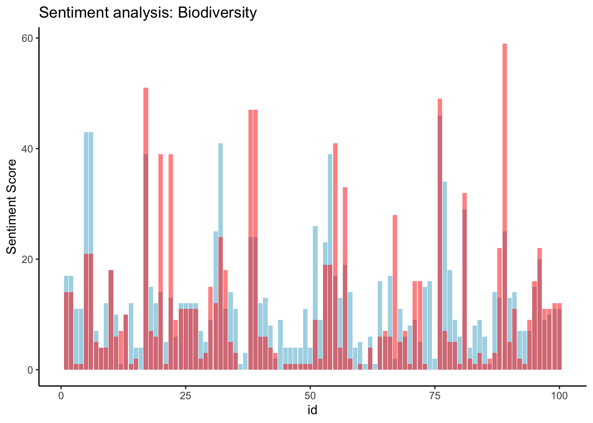
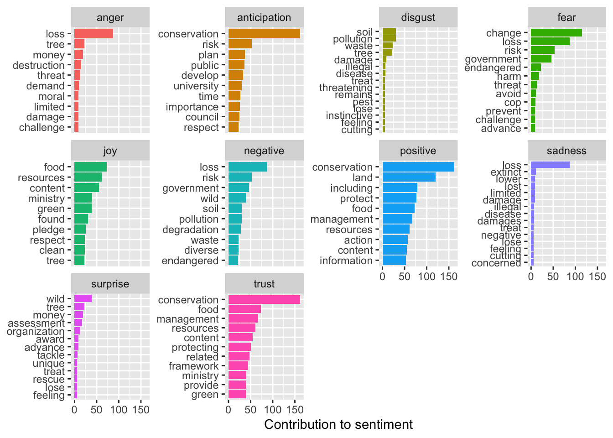
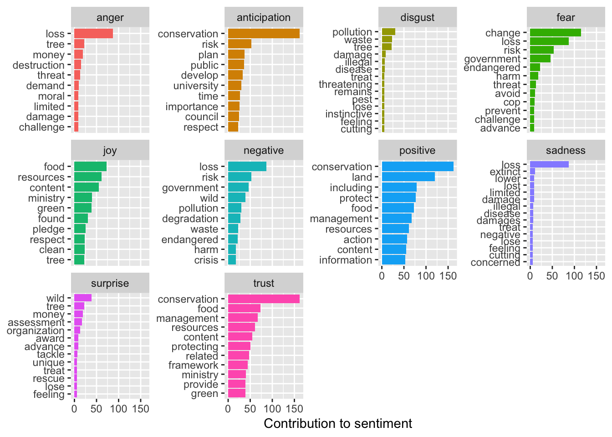

This time use the full text of the articles for the analysis. First clean any artifacts of the data collection process (hint: this type of thing should be removed: “Apr 04, 2022( Biofuels Digest: http://www.biofuelsdigest.com/ Delivered by Newstex”))
Code
meta <- pre_dat@metaarticles <- pre_dat@articlesparagraphs <- pre_dat@paragraphsdata <-tibble(Date = meta$Date, Headline = meta$Headline, id = pre_dat@articles$ID, text = pre_dat@articles$Article)
Explore your data a bit and replicate the analyses above presented in class.
Code
# date freqdate_freq <- data %>%group_by(Date) %>%summarise(freq =n())ggplot(date_freq, aes(x = Date, y = freq)) +geom_bar(stat ="identity", fill ="steelblue") +theme_minimal() +labs(x ="Date", y ="Frequency", title ="Frequency of Dates 2022-2023") +theme(axis.text.x =element_text(angle =45, hjust =1))
# Extract wordstext <- data |>unnest_tokens(output = word, input = text, token ='words')# join to sent sent_words <- text |>anti_join(stop_words, by ="word") |>inner_join(bing_sent, by ='word') |>mutate(sent_num =case_when(sentiment =="negative"~-1, sentiment =="positive"~1))
These articles seem to be much more positive than the ones we analyzed in class
Code
ggplot(sent_article2, aes(x = id)) +theme_classic() +geom_col(aes(y = positive), stat ='identity', fill ='lightblue') +geom_col(aes(y = negative), stat ='identity', fill ='red', alpha =0.5) +labs(title ='Sentiment analysis: Biodiversity', y ="Sentiment Score")
Warning in geom_col(aes(y = positive), stat = "identity", fill = "lightblue"):
Ignoring unknown parameters: `stat`
Warning in geom_col(aes(y = negative), stat = "identity", fill = "red", :
Ignoring unknown parameters: `stat`

Code
nrc_word_counts_bio <- text |>anti_join(stop_words, by ="word") |>inner_join(nrc_sent) |>count(word, sentiment, sort = T)
Joining with `by = join_by(word)`
Warning in inner_join(anti_join(text, stop_words, by = "word"), nrc_sent): Detected an unexpected many-to-many relationship between `x` and `y`.
ℹ Row 2 of `x` matches multiple rows in `y`.
ℹ Row 11946 of `y` matches multiple rows in `x`.
ℹ If a many-to-many relationship is expected, set `relationship =
"many-to-many"` to silence this warning.
Code
# Now to look at specific nrc sentimentssent_counts2 <- text |>anti_join(stop_words, by ='word') |>group_by(id) |>inner_join(nrc_sent) |>group_by(sentiment) |>count(word, sentiment, sort = T)
Joining with `by = join_by(word)`
Warning in inner_join(group_by(anti_join(text, stop_words, by = "word"), : Detected an unexpected many-to-many relationship between `x` and `y`.
ℹ Row 2 of `x` matches multiple rows in `y`.
ℹ Row 11946 of `y` matches multiple rows in `x`.
ℹ If a many-to-many relationship is expected, set `relationship =
"many-to-many"` to silence this warning.
Code
sent_counts2 |>group_by(sentiment) |>slice_max(n, n =10) |>ungroup() |>mutate(word =reorder(word, n)) |>ggplot(aes(x=n, y=word, fill = sentiment)) +geom_col(show.legend =FALSE) +facet_wrap(~sentiment, scales="free_y") +labs(x ="Contribution to sentiment", y =NULL)

“Loss” seems to be associated with strongly negative emotions. Conservation also seems to elicit a strong emotional response.
Look at the nrc contribution to emotion by word plots. Identify and reclassify or remove at least one term that gives misleading results in your context.
Soil, wind, and diverse are associated with negative emotions, which in this context is misleading. We’re going to reclassify these.
Code
sent_counts2 |>filter(!word %in%c("soil", "wind", "diverse")) |>group_by(sentiment) |>slice_max(n, n =10) |>ungroup() |>mutate(word =reorder(word, n)) |>ggplot(aes(x=n, y=word, fill = sentiment)) +geom_col(show.legend =FALSE) +facet_wrap(~sentiment, scales="free_y") +labs(x ="Contribution to sentiment", y =NULL)

Thats better, harm and crisis are more appropriately associated with negative sentiment than soil and wind
Plot the amount of nrc emotion words as a percentage of all the emotion words used each day (aggregate text from articles published on the same day). How does the distribution of emotion words change over time? Can you think of any reason this would be the case?
Code
nrc_emotion_counts <- text %>%inner_join(nrc_sent) %>%count(Date, sentiment)
Joining with `by = join_by(word)`
Warning in inner_join(., nrc_sent): Detected an unexpected many-to-many relationship between `x` and `y`.
ℹ Row 2 of `x` matches multiple rows in `y`.
ℹ Row 11946 of `y` matches multiple rows in `x`.
ℹ If a many-to-many relationship is expected, set `relationship =
"many-to-many"` to silence this warning.
Code
# Aggregate the text from articles published on the same daytotal_emotions_by_day <- nrc_emotion_counts %>%group_by(Date) %>%summarise(total =sum(n))# Calculate the percentage of NRC emotion words per daynrc_emotion_percentage <- nrc_emotion_counts %>%left_join(total_emotions_by_day, by ="Date") %>%mutate(percentage = n / total *100)# Plot the distribution of emotion words over timeggplot(nrc_emotion_percentage, aes(x = Date, y = percentage, color = sentiment)) +geom_line() +theme_minimal() +labs(x ="Date", y ="Percentage of Emotion Words", title ="Distribution of Emotion Words Over Time") +theme(legend.title =element_blank(), legend.position ="bottom", legend.box ="horizontal")
The sentiment around the biodiversity term is overwhelmingly positive over the given time period. Trust was the second most frequent sentiment. This could be because most of the articles I downloaded were related to conservation efforts and achievements. The only time negative sentiment surpasses positive sentiment was at the end of February, when the only article published within a 6 day period was titled “Majorda locals object to alleged destruction of biodiversity, natural flow of water by RVNL”